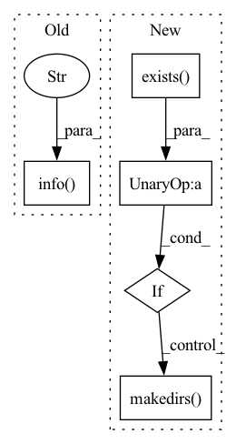

Pattern ID :35210
Before Change
f"time: {val_time:.2f}")
return
// 8. Start training and validation
logging.info(f"Start training from epoch {last_epoch + 1}." )
for epoch in range(last_epoch + 1, config.TRAIN.NUM_EPOCHS + 1):
// train
logging.info(f"Now training epoch {epoch}. LR={optimizer.get_lr():.6f}")
train_loss, train_acc, train_time = train(dataloader=dataloader_train,After Change
config.SAVE = "{}/train-{}".format(config.SAVE, time.strftime("%Y%m%d-%H-%M-%S"))
else:
config.SAVE = "{}/eval-{}".format(config.SAVE, time.strftime("%Y%m%d-%H-%M-%S"))
if not os.path.exists(config.SAVE) :
os.makedirs( config.SAVE, exist_ok=True)
last_epoch = config.TRAIN.LAST_EPOCH
seed = config.SEED
paddle.seed(seed)
np.random.seed(seed)In pattern: SUPERPATTERN
Frequency: 3
Non-data size: 5
Instances Fragment ID: 100263833
Project Name: br-idl/paddlevit
Commit Name: e23569eededb7555508ac68a1244b94d153d3429
Time: 2021-12-09
Author: xperzy@gmail.com
File Name: image_classification/ViT/main_single_gpu.py
M Class Name: AnonimousClass
N Class Name: AnonimousClass
M Method Name: main(0)
N Method Name: main(0)
M Parent Class:
N Parent Class:
M File Name: image_classification/ViT/main_single_gpu.py
N File Name: image_classification/ViT/main_single_gpu.py
M Start Line: 244
M End Line: 308
N Start Line: 205
N End Line: 324
Before Change
base_encoder = eval(args.backbone)
model = SimCLR(base_encoder, projection_dim=args.projection_dim).to(device)
logging.info(f"Base model: {args.backbone} - feature dim: {model.feature_dim} - projection dim {args.projection_dim}")
logging.info("Fitting SimCLR model" )
//model.fit(args, device)
model.load_state_dict(torch.load("simclr_resnet18_epoch100.pt"), strict=False)
// Compute feature importance
W = 32After Change
model_path = Path.cwd() / f"models/simclr_{args.backbone}_epoch{args.epochs}.pt"
// Fit a model if it does not exist yet
if not model_path.exists():
if not (Path.cwd() / "models").exists() :
os.makedirs( Path.cwd() / "models")
fit_model(args)
// Prepare the model
device = torch.device("cuda") if torch.cuda.is_available() else torch.device("cpu") Fragment ID: 100263832
Project Name: jonathancrabbe/label-free-xai
Commit Name: 5ec7cb757f497d1cef0817442a377b4cf2e5d168
Time: 2022-05-19
Author: jonathan.cr1302@gmail.com
File Name: experiments/cifar10.py
M Class Name: AnonimousClass
N Class Name: AnonimousClass
M Method Name: consistency_feature_importance(1)
N Method Name: consistency_feature_importance(1)
M Parent Class:
N Parent Class:
M File Name: experiments/cifar10.py
N File Name: experiments/cifar10.py
M Start Line: 25
M End Line: 79
N Start Line: 36
N End Line: 98
Before Change
return
// 8. Start training and validation
logging.info(f"Start training from epoch {last_epoch+1}." )
for epoch in range(last_epoch+1, config.TRAIN.NUM_EPOCHS+1):
// train
logging.info(f"Now training epoch {epoch}. LR={optimizer.get_lr():.6f}")
train_loss_ce, train_loss_bbox, train_loss_giou, train_time = train(After Change
config.SAVE = "{}/train-{}".format(config.SAVE, time.strftime("%Y%m%d-%H-%M-%S"))
else:
config.SAVE = "{}/eval-{}".format(config.SAVE, time.strftime("%Y%m%d-%H-%M-%S"))
if not os.path.exists(config.SAVE) :
os.makedirs( config.SAVE, exist_ok=True)
last_epoch = config.TRAIN.LAST_EPOCH
seed = config.SEED
paddle.seed(seed) Fragment ID: 100263835
Project Name: br-idl/paddlevit
Commit Name: 66ec7d581509e0d34a264da33f917b4a577b1996
Time: 2022-01-07
Author: xperzy@gmail.com
File Name: object_detection/DETR/main_single_gpu.py
M Class Name: AnonimousClass
N Class Name: AnonimousClass
M Method Name: main(0)
N Method Name: main(0)
M Parent Class:
N Parent Class:
M File Name: object_detection/DETR/main_single_gpu.py
N File Name: object_detection/DETR/main_single_gpu.py
M Start Line: 210
M End Line: 315
N Start Line: 231
N End Line: 405